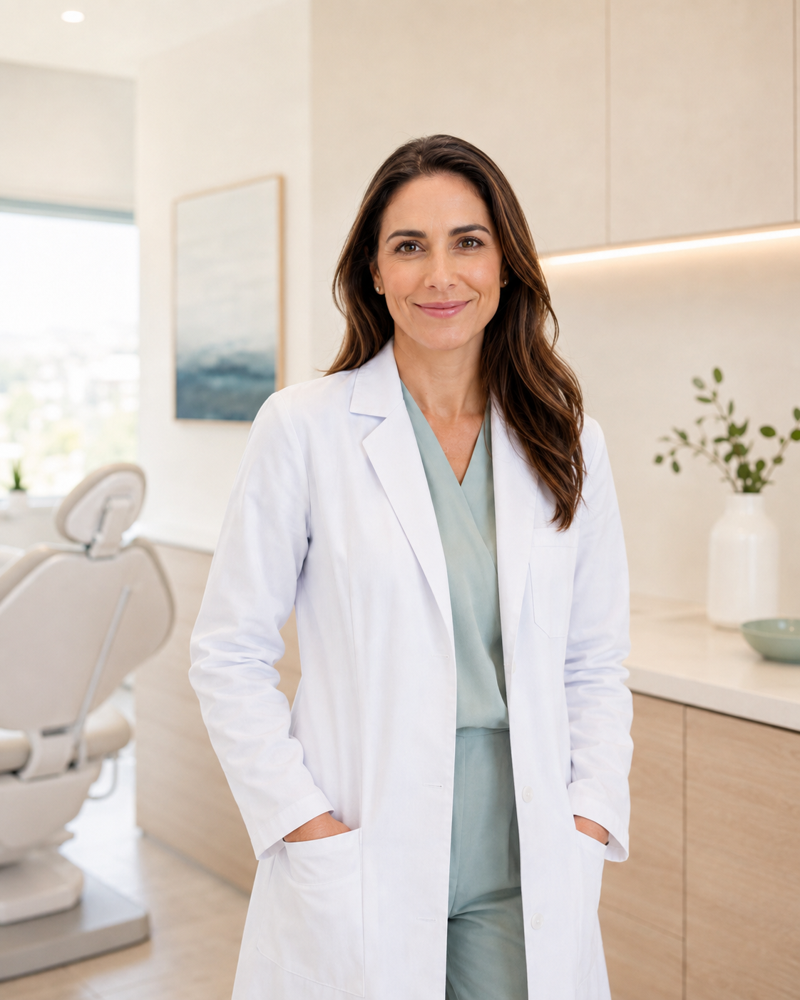
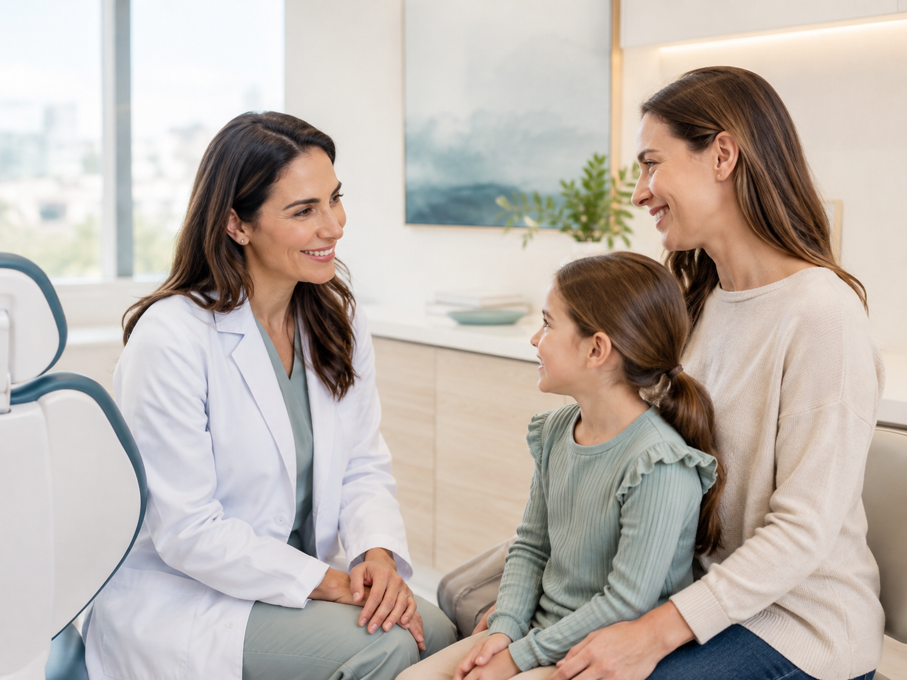
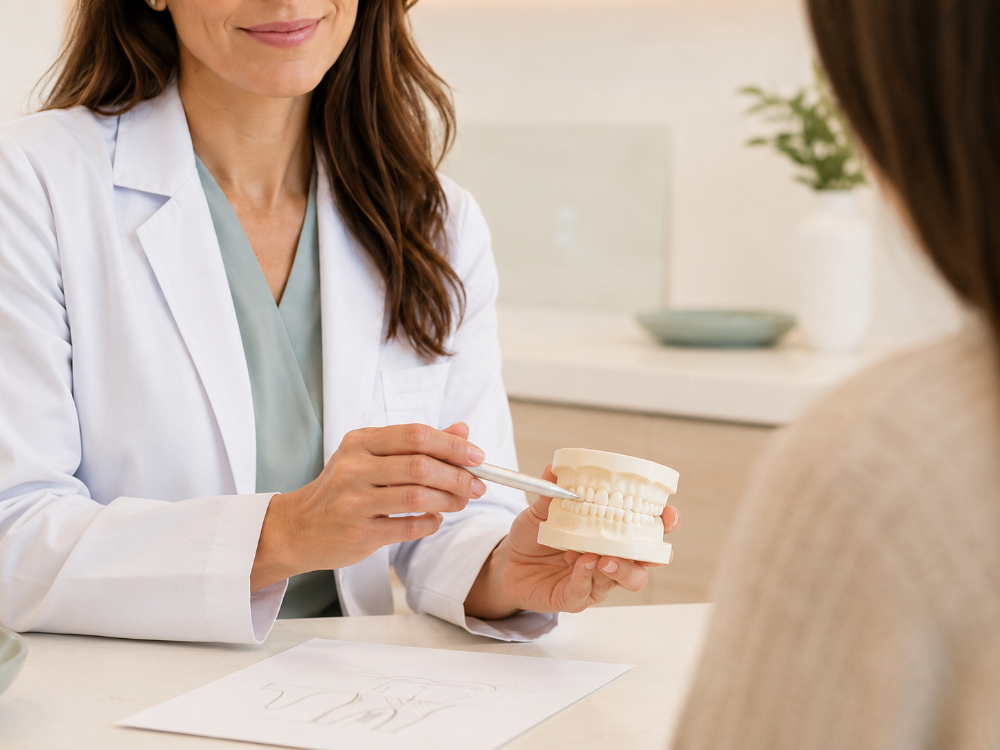
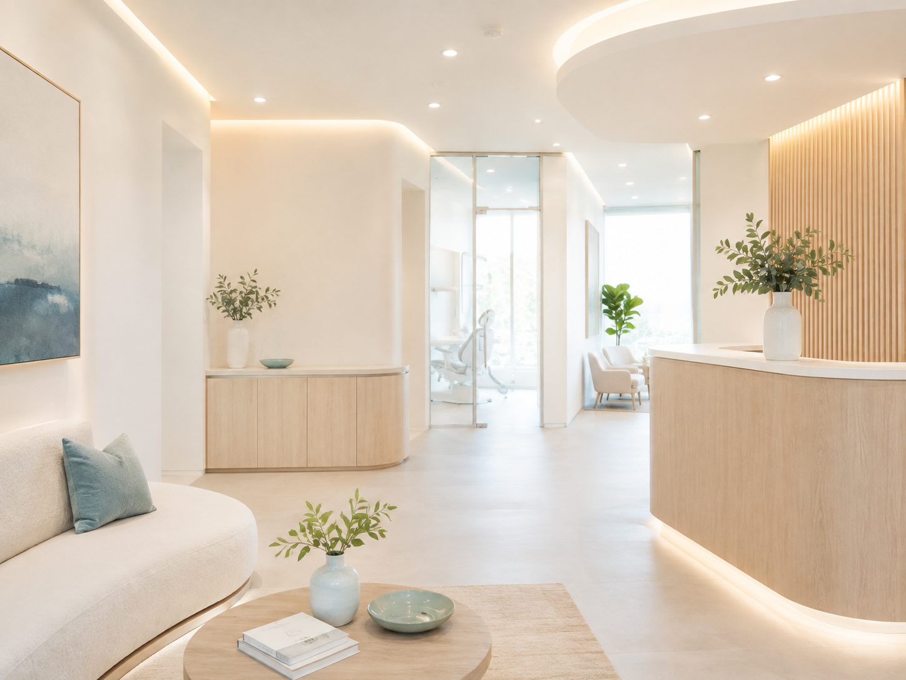

Ortodoncia
Evaluación especializada para acompañar cada etapa de forma clara y personalizada.
ConsultarOdontología especializada · Montevideo
Dra. Clara Duarte
Especialista en Ortodoncia y Ortopedia Buco Máxilo Facial.
Docente G2 del Servicio de Urgencia de Udelar

La profesional detrás del consultorio
Una propuesta de atención centrada en el encuentro, la claridad y una mirada especializada para cada consulta.
Áreas de atención
Cada consulta es el punto de partida para conversar, evaluar y definir el camino adecuado.
Evaluación especializada para acompañar cada etapa de forma clara y personalizada.
ConsultarUn espacio de atención integral orientado a las necesidades de cada persona.
Consultar
Una atención cercana para acompañar distintas edades y momentos.
ConsultarUn área de atención que comienza con una consulta y evaluación profesional.
ConsultarAtención enfocada en conversar objetivos y valorar cada caso.
ConsultarUna forma cercana de atender
Atención personalizadaUna consulta pensada desde las necesidades de cada persona.
EspecializaciónLa formación de la Dra. Duarte como eje de la atención.
SeguimientoAcompañamiento a lo largo de las distintas etapas.
Comunicación claraInformación comprensible para tomar decisiones con tranquilidad.
ConfianzaUn vínculo profesional, humano y respetuoso.
Opiniones en Google
Espacio preparado para integrar opiniones verificadas de Google.
Las experiencias reales podrán incorporarse aquí, respetando fielmente el contenido publicado por cada persona.

Desde el primer contacto
Preguntas frecuentes
Información breve para dar el primer paso con claridad.
Podés iniciar el contacto por WhatsApp desde los botones disponibles en esta página.
Sí. La Dra. Clara Duarte es especialista en Ortodoncia y Ortopedia Buco Máxilo Facial.
En Guayabos 1949, Montevideo. Podés abrir la ubicación directamente en Google Maps.
Es una instancia para conversar sobre tu motivo de consulta y realizar una evaluación personalizada.
El consultorio

Tu primer paso
Un espacio para conversar, evaluar tu caso y definir cómo seguir.